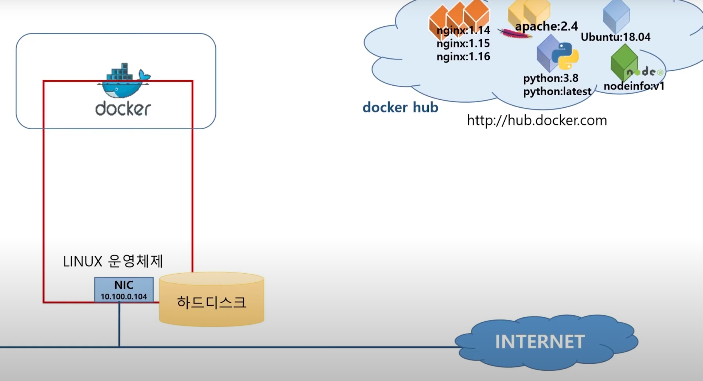
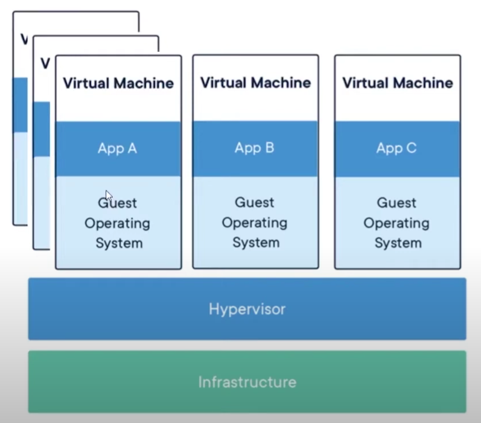
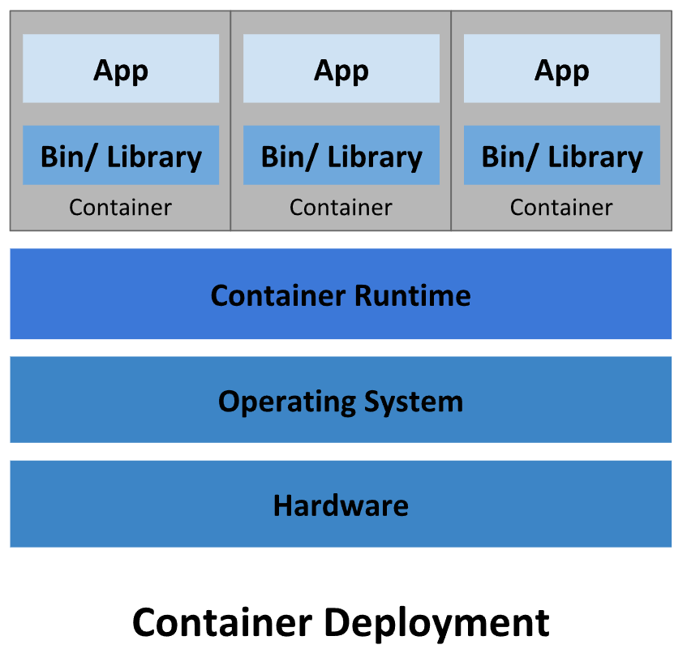
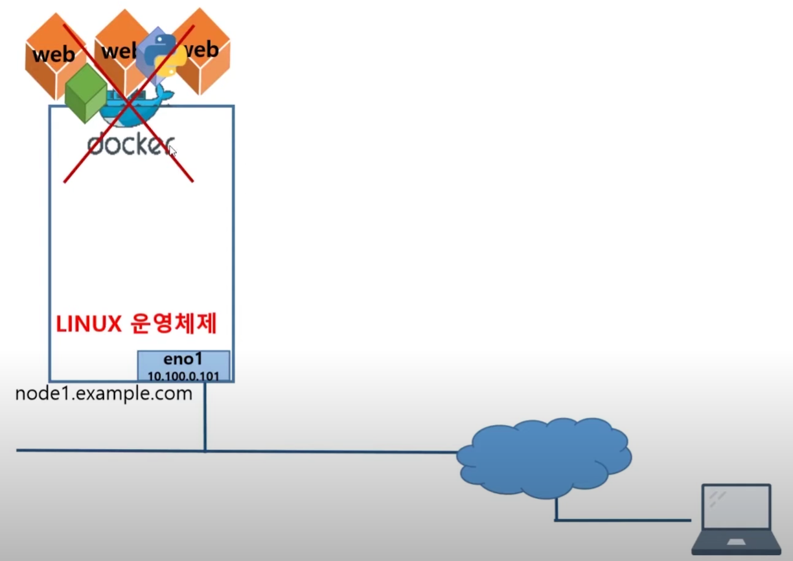
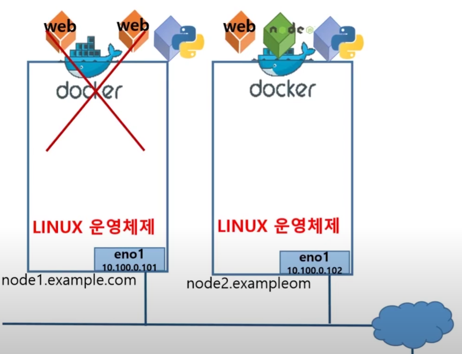
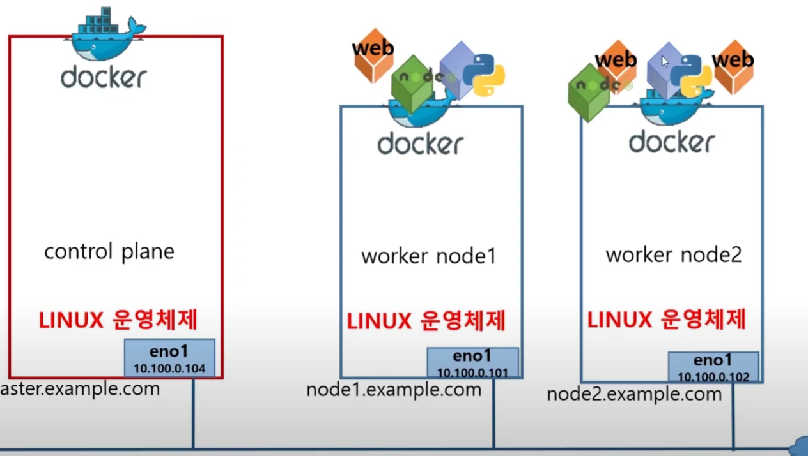
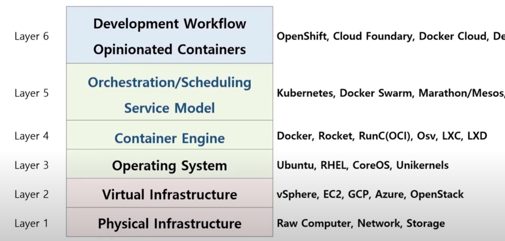
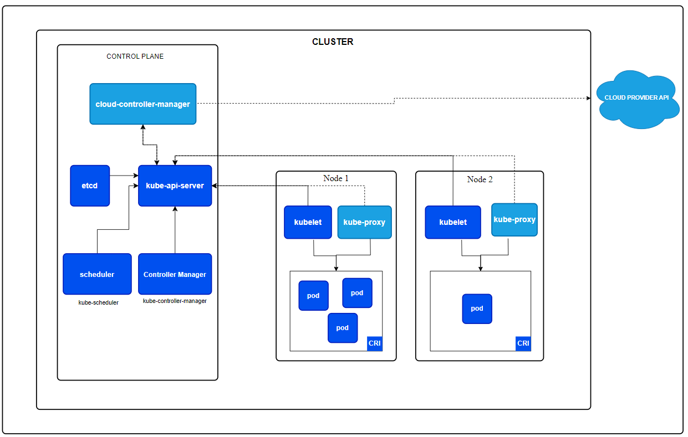
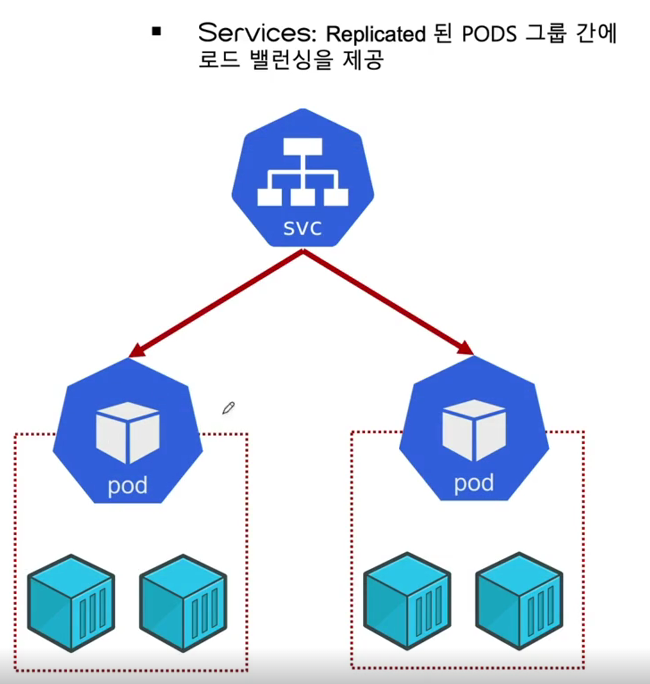

ci-cd-section-04-ch-01-kubernates-intro
컨테이너와 가상화

가상화 환경에서는 각 머신이 호스트 OS와 독립된 네트워크 인터페이스(NIC )를 가집니다.
가상 머신은 고유한 IP주소를 가지고 있으므로 직접 네트워크에 접근할 수 있습니다.
반면에 컨테이너는 호스트 OS의 네트워크 인터페이스를 공유합니다.
컨테이너와 통신을 하려면 호스트 시스템의 IP 주소와 포트를 사용하여 외부와 통신합니다. 컨테이너 내부에 직접적으로 IP주소로 접근할 수 없습니다. 호스트 시스템의 IP주소와 포트 포워딩을 통해 접근할 수 있습니다.
동일한 호스트 시스템 내에서 컨테이너들 사이에서는 포트 포워딩을 사용하지 않고 컨테이너 IP를 통해 접근이 가능합니다.
가상화를 통한 스케일 아웃

가상화를 통해서 애플리케이션에서 필요한 리소스만 가상화 PC에 설정하여 효율적으로 자원을 사용할 수 있습니다.
만약, App A가 트래픽이 더 필요하다면 스케일 업 방식을 통해 컴퓨터 자원을 더 투자하는 방법이 있습니다.
다만 App A가 못 버티고 서버가 죽는다면, 대체할 수 있는 애플리케이션이 없기 때문에 이미지 처럼 스케일 아웃을 통해 여러 서버들 만드는 방법을 사용합니다.
3개 중 하나가 죽어도 나머지 2개로 돌릴 수 있도록 합니다. 서비스의 연속성을 유지할 수 있습니다.
컨테이너를 통한 스케일 아웃

호스트 OS 위에 컨테이너 엔진을 설치하여 컨테이너 환경을 구축합니다.
컨테이너 환경은소스코드+ 베이스 환경(Web Server등)만 필요합니다. 가상화의 환경은 OS + 소스코드 + 베이스 환경이 필요하게 됩니다.
똑같은 스케일 아웃을 한다면, 가상화 환경이 더 많은 리소스가 필요하게 됩니다.
그러다보니 스케일 아웃을 한다면 가벼운 컨테이너가 훨씬 더 빠르게 확장과 축소가 가능합니다.
컨테이너의 주 목적은 : 배포 입니다.
공용된 리소스를 사용하고 가상화처럼 독립된 환경을 만들수 있는데 컨테이너 기술입니다.
단일 서버 구성 컨테이너의 한계

컨테이너 하나의 서버가 다운 되는게 아니라 컨테이너를 동작시키는 호스트 OS가 다운이 된다면 대체할 수 있는 방법이 없습니다.

그래서 여러 서버를 사용하는 멀티 호스트 도커 플랫폼을 사용하게 됩니다.
만약 도커 시스템 한 대가 다운이 된다고 해도 서비스 운영에는 문제가 없습니다.
그런데 도커 서버 마다에 웹 서버, 결제 서버를 배치하고 유지및 관리를 직접해야합니다.
마이크로 서비스에서 컨테이너가 수십, 수백개가 실행될때 개발자가 직접 관리하는건 어렵습니다.
컨테이너 오케스트레이션

마스터 노드가 나머지 워크 노드 서버 사양에 맞는 컨테이너 구조(웹 ,결제,장바구니 서버 구조 )를 배치하여 관리합니다.
만약 A 노드가 다운이 된다면 실행중인 B 노드에 컨테이너 구조를 추가하여 자동 관리하도록 합니다.
필요하다면 컨테이너 구조를 확대하거나 축소를 하는 기능도 사용할 수 있습니다.
컨테이너 계층 구조

컨테이너 오케스트레이션을 사용하려면 어떤 인프라가 필요한지 알아야합니다.
OS 과 컨테이너 엔진이 설치되어있어야 하며 컨테이너 오케스트레이션은 밑에 있는 컨테이너 플랫폼을 관리하고 스케줄링 및 관리합니다.
쿠버네티스는 컨테이너화된 애플리케이션을 자동으로 배포, 스케일링 및 관리해주는 오픈소스 시스템입니다.
쿠버네티스 소개
쿠버네티스가 하는 역할
컨테이너화 된 애플리케이션 구동
서비스 디스커버리와 로드 밸런싱
스토리지 오케스트레이션
자동화된 롤아웃과 롤백
자동화된 빈 패킹(bin packing)
자동화된 복구(self-healing)
시크릿과 구성관리
쿠버네티스가 수행하지 못하는 역할
소스 코드 배포 X, 빌드 X
애플리케이션 레벨 서비스 X
로깅, 모니터링 솔루션 X
포괄적인 머신 설정, 유지보수, 관리, 자동복구시스템 제공 X
쿠버네티스 클러스터란?

쿠버네티스는 마스터 노드와 워크 노드가 있고 마스터 노드에서는 전체 구성되어있는 각각의 PC,각각의 노드를 관리하는 역할입니다.
실제로 컨테이너 자체를 운영하고 컨테이너의 대한 스케줄링 작업을 하는 건 워크 노드입니다
이 전체를 묶어서 쿠버네티스 클러스터라고 표현합니다.
마스터 노드 안에서는 설정 정보나 사용자의 스케줄 관리,API 이런 것을 처리할 수 있도록 구성되어있으며, 각각의 노드들은 실제로 우리가 운영하고자하는 컨테이너를 관리하기 위한 Pod라는 개념이 있습니다.
이 Pod를 운영하기 위한 Kubelet이라는 개념도 포함되어있습니다.
- 파드(Pod)
파드는 쿠버네티스에서 어플리케이션의 가장 작은 배포 단위입니다.
하나 이상의 컨테이너로 구성되어 있으며, 공유된 네트워크 및 스토리지를 가지고 있습니다.
동일한 호스트에서 실행되는 컨테이너 그룹으로, 서로 강하게 결합되어 있습니다.
파드는 하나의 IP 주소와 포트 범위를 공유하며, 로컬 호스트에서 실행됩니다.
- kubelet
kubelet은 쿠버네티스 클러스터의 각 노드에서 실행되는 에이전트입니다.
파드를 노드에서 실행하고 관리하는 책임이 있습니다.
쿠버네티스 API 서버와 통신하여 파드의 상태를 보고하고, 할당된 파드를 생성하고 실행합니다.
파드의 상태를 모니터링하고 필요에 따라 재시작하거나 다시 시작합니다.
노드의 자원 사용량을 관리하고 파드의 스케줄링을 지원합니다.
워커 노드 내부

- kube-proxy
kube-proxy는 쿠버네티스 클러스터의 네트워크 프록시 및 로드 밸런서 역할을 수행하는 컴포넌트입니다.
파드 간의 네트워크 트래픽을 로드 밸런싱하여 파드 간 통신을 가능하게 합니다.
서비스 오브젝트가 정의된 경우, 해당 서비스에 대한 엔드포인트를 관리하고 외부에서의 접근을 허용하기 위해 네트워크 라우팅을 설정합니다.
IPVS, iptables 등과 같은 다양한 프록시 모드를 지원하여 네트워크 트래픽을 관리하고 효율적으로 분산시킵니다.
CI/CD 파이프라인을 통해 생성된 결과물은 컨테이너 이미지로 빌드되어 쿠버네티스 클러스터 내의 Pod에 배포됩니다.
이 Pod는 외부와의 통신을 위해 Service로 노출되며, 사용자나 애플리케이션은 마스터 노드를 통해 결과물을 요청하고, 이 요청은 적절한 Pod에서 처리됩니다.
결과물은 워커 노드에서 실행 중인 Pod에 배포됩니다.
Kubectl
kubectl은 쿠버네티스 클러스터를 제어하기 위한 공식 명령줄 도구로, 마스터 노드에 명령을 전달하는 데 주로 사용됩니다. 이 도구를 사용하여 쿠버네티스 클러스터 내의 리소스를 관리하고 제어할 수 있습니다. kubectl을 통해 파드를 생성하거나 삭제하고, 서비스를 생성하거나 조회하는 등의 작업을 수행할 수 있습니다. 따라서 kubectl은 쿠버네티스 클러스터를 관리하는 데 중요한 역할을 합니다.